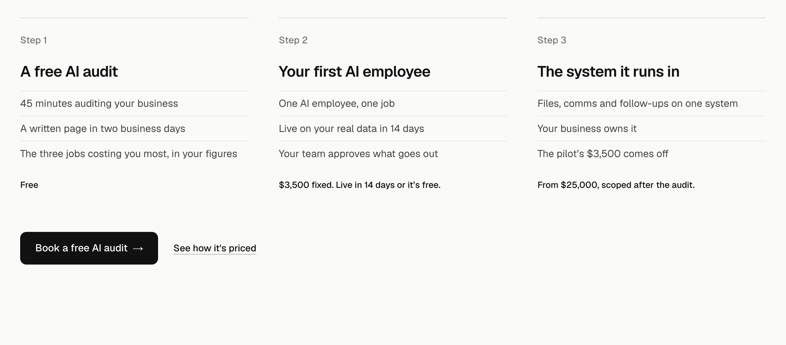
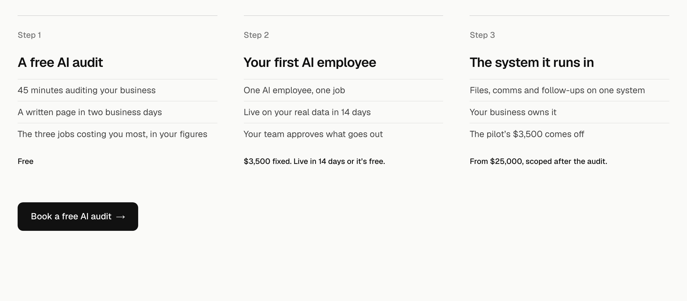
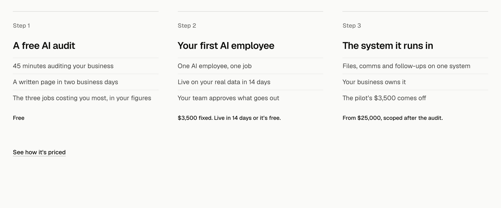
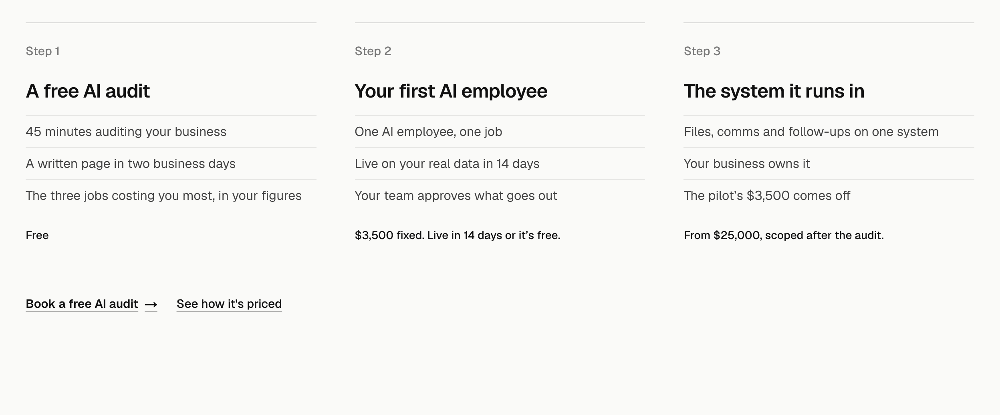

How it works, detail 4: the closing button and link
The section from the steps down, drawn on the real homepage at 1440 wide. Only the close changes.
TodayThe black audit button, matching the hero’s, with “See how it’s priced” beside it. Both next steps a reader has after the prices: book, or read more. Recommended, for comparison.

1. Button onlyThe audit button alone, so the section ends on its one action. The prices are already on the steps; anyone who wants more finds Pricing in the header.

2. Link only“See how it’s priced” alone. The hero’s audit button is one screen up and the page ends on one, so this section only points to the detail.

3. Both as linksThe audit becomes a bold underlined link beside the pricing link, so the close is quieter and the steps carry the section. The page’s black buttons stay for the hero and the end.
